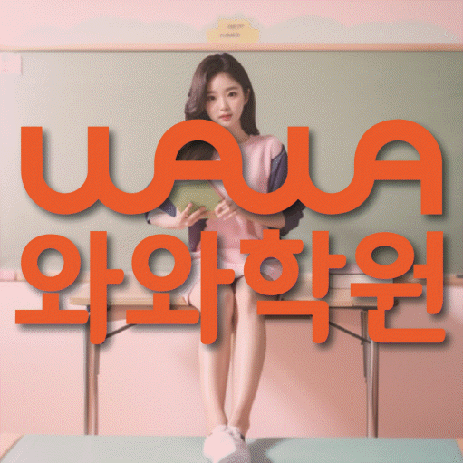
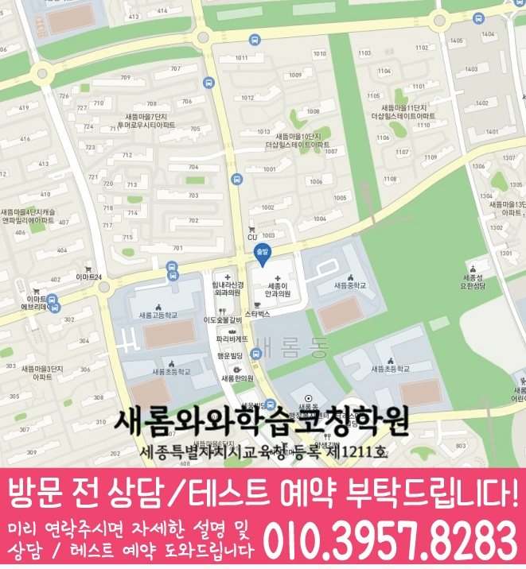

국어 수업 가능 학년
초5 · 초6 · 중1 · 중2 · 중3 · 고1 · 고2 · 고3
ACADEMIC SUPPORT LOCAL GUIDE
다정동 보습학원 선택 전 확인할 학생 유형, 현재 학년 학습 상태, 수업학교 자료 활용법, 입시후기 질문, 주소 기준 등하원 계획을 안내합니다.
30초 핵심 안내
다정동 보습학원을 알아보는 상황이라면, 답은 단순히 문제를 많이 푸는 수업을 고르는 데 있지 않습니다. 시험 직전 집중력은 좋은 편이지만 과제 마감이 자주 밀리는 학생에게 필요한 것은 현재 학년 자료를 바탕으로 원인을 나눈 뒤 과제를 짧은 분량으로 나누고 시작·종료 시각과 미완료 원인을 기록하는 방식을 수업마다 일관되게 적용하는 구조입니다. 또한 입시후기의 조건과 세종특별자치시 새롬중앙로 62-15 해피라움W 305호까지 함께 확인해야 수업 내용과 생활 동선이 모두 맞는 선택이 됩니다.
다정동은 수업 가능 생활권 기준입니다. 실제 방문 센터는 와와학습코칭센터 새롬점이며, 주소와 등록 정보는 아래 센터 기준 정보에서 확인할 수 있습니다.
초5 · 초6 · 중1 · 중2 · 중3 · 고1 · 고2 · 고3
초5 · 초6 · 중1 · 중2 · 중3 · 고1 · 고2 · 고3
초5 · 초6 · 중1 · 중2 · 중3 · 고1 · 고2 · 고3



센터 기준 정보
센터명·주소·등록 정보와 교습비 확인 경로를 상담 전에 살펴볼 수 있도록 정리했습니다.
충청 새롬중앙로 다정동 상담 기준
세종특별자치시 새롬중앙로 62-15 해피라움W 305호
세종특별자치시교육청 등록 제1211호
실제 수업 가능 시간은 학년·과목별 일정에 따라 상담에서 확인합니다.
동네명은 수업 가능 지역을 찾기 위한 안내 기준입니다.
새뜸초 · 새롬초
새뜸중 · 새롬중
새롬고 · 다정고
센터명·주소·등록번호·가능 학년·학교 참고 정보는 제공된 센터 자료를 기준으로 정리했으며, 실제 수업 범위와 일정은 상담에서 다시 확인합니다.
지역별 학습 안내
학생의 과목별 학습 상황과 상담 전에 확인할 기준을 여섯 가지 주제로 나누어 정리했습니다.
다정동 보습학원의 계획은 현재 학교 진도, 이전 단원의 빈틈과 다음 평가 준비를 한 줄에 섞지 않고 구분해야 합니다. 시험 직전 집중력은 좋은 편이지만 과제 마감이 자주 밀리는 학생에게는 과제를 짧은 분량으로 나누고 시작·종료 시각과 미완료 원인을 기록하는 방식이 선행 확대보다 우선일 수 있습니다. 다정동에서는 현재 학년의 필수 개념을 확인한 뒤 학교 수업에서 바로 쓰일 내용과 장기적으로 보완할 내용을 별도 칸에 배치해야 학생도 공부 이유를 이해하기 쉽습니다. 충청 새롬중앙로 다정동의 시험 기간에는 범위 중심으로 비중을 조정하되 시험이 끝난 뒤 누적 오답과 취약 단원을 다시 계획에 넣어야 단기 대비가 일회성으로 끝나지 않습니다.
시험 직전 집중력은 좋은 편이지만 과제 마감이 자주 밀리는 학생은 “공부를 안 한다”는 한 문장으로 설명하기 어렵습니다. 다정동 상담에서는 정답률, 풀이 시작까지 걸리는 시간, 질문 빈도, 과제 미완료 이유를 나누어 확인해야 원인을 잘못 판단하지 않습니다. 다정동에서 우선 적용할 방법은 과제를 짧은 분량으로 나누고 시작·종료 시각과 미완료 원인을 기록하는 방식입니다. 충청 새롬중앙로 다정동 학생은 현재 학년 내용을 자신의 말로 설명하고 비슷한 문제를 혼자 풀 수 있는지를 확인한 뒤 다음 진도를 정하는 편이 안전합니다.
“입시후기”는 합격을 보장하는 문구가 아니라 학생의 현재 학년, 학교 기록, 학습 상태와 지원 일정을 근거로 선택지를 정리하는 과정이어야 합니다. 다정동에서 입시후기를 확인할 때는 목표를 단정하기보다 필요한 자료, 준비 순서, 점검 시점과 대안 경로를 구분해 설명하는지 확인하십시오. 다정동 학부모가 과거 결과나 후기만 볼 경우 학생 조건의 차이를 놓칠 수 있으므로, 사례의 대상 학년과 출발점을 함께 물어보는 편이 좋습니다. 입시후기와 보습 수업이 연결되려면 당장 해야 할 교과 학습과 장기 준비를 별도 계획으로 제시하고 정기적으로 수정해야 합니다.
다정동 페이지의 제공 수업학교에는 새뜸초, 새롬초 등이 포함됩니다. 다정동에서는 학교명이 같아도 학년과 시기, 실제 교과 수업에 따라 진도와 평가 방식이 달라질 수 있으므로 과거 경험만으로 범위를 추정해서는 안 됩니다. 충청 새롬중앙로 다정동 학생의 주간 계획은 범위표, 학교 과제 공지, 수업 필기와 교과서 표시를 기준으로 수정되어야 합니다. 다정동에서 목록 밖 학교를 검토할 경우 수업 가능 여부는 별도로 확인해야 합니다.
다정동 보습학원 상담을 예약하기 전에는 최근 평가 자료, 현재 교재, 학교 일정표와 가능한 등원 요일을 준비하면 답이 구체적이 됩니다. 다정동의 실제 생활표를 놓고 보면 첫째 진단 방식, 둘째 수업 인원과 개별 확인 범위, 셋째 과제·오답 처리, 넷째 결석 보강, 다섯째 피드백 주기, 여섯째 비용·변경·환불 기준을 같은 순서로 묻는 것이 좋습니다. 입시후기 설명은 구두 약속으로 끝내지 말고 적용 대상, 시작 시점, 예외 상황과 확인 방법을 기록해 두십시오. 다정동 학부모가 답변을 기록할 때는 상담 당일 성적 상승 폭이나 입시 결과를 단정하는 표현보다 현재 자료를 근거로 조정 가능한 계획을 제시하는지를 선택 기준으로 삼으십시오.
다정동 보습학원을 비교할 때 수업의 질은 설명 시간보다 학생에게 남는 행동으로 확인할 수 있습니다. 다정동 수업의 권장 흐름은 짧은 사전 확인, 핵심 개념 설명, 학생의 독립 풀이, 오류 원인 분류, 답을 가린 재풀이, 다음 수업의 재점검입니다. 특히 시험 직전 집중력은 좋은 편이지만 과제 마감이 자주 밀리는 학생에게는 과제를 짧은 분량으로 나누고 시작·종료 시각과 미완료 원인을 기록하는 방식을 수업과 과제에 반복해 연결해야 합니다. 다정동에서는 과제량이 많은지 적은지보다 정해진 시간 안에 시작했는지, 막힌 문제를 표시했는지, 채점 뒤 다시 풀었는지로 판단하는 편이 정확합니다.
FAQ
다정동 페이지에 제공된 주소는 세종특별자치시 새롬중앙로 62-15 해피라움W 305호입니다. 다정동에서는 학교에서 출발하는 날과 집에서 출발하는 날을 나누고, 가장 늦은 요일의 수업 종료·귀가 시간과 편의 서비스 제공 여부를 확인해야 합니다.
다정동 페이지에 제공된 학교 정보는 새뜸초, 새롬초입니다. 다정동 내신 계획은 학교명보다 실제 교과서·범위표·평가 일정에 맞추어야 하며, 제공 목록에 없는 학교의 수업 여부는 상담에서 다시 확인해야 합니다.
시험 직전 집중력은 좋은 편이지만 과제 마감이 자주 밀리는 학생이라면 현재 학년의 빈틈을 나누어 보고 과제를 짧은 분량으로 나누고 시작·종료 시각과 미완료 원인을 기록하는 방식을 실제 수업과 과제에 연결하는지를 우선 확인하는 편이 좋습니다.
다정동 상담에서는 학생마다 시작 수준·시험 난도·학습 기간이 다르므로 성적 변화 폭을 미리 확답할 수 없습니다. 다정동 학생은 정해진 시각에 과제를 시작하고 미완료 사유를 적는 비율 같은 과정 지표와 학교 평가를 함께 추적하며 계획을 조정하는 설명이 더 현실적입니다.
입시 관련 설명은 보장 표현이 아니라 다정동 학생의 학년·학교 자료·학습 기록·지원 일정에 맞춘 선택지와 대안 계획으로 제시되어야 합니다.
상담 상황 예시
다정동의 등원 위치와 수업 종료 후 일정을 한 주표에 적어 보니 제공 주소가 생활 리듬에 맞는지 차분히 판단할 수 있었습니다. 다정동에서는 입시후기도 조건과 확인 방법을 구분해 메모하니 할인이나 홍보 문구에만 흔들리지 않았습니다.
다정동에서 여러 보습학원을 비교하면서 교재명만 들었을 때보다 수업 전 진단, 혼자 풀이, 오답 재확인 순서를 들었을 때 차이를 알기 쉬웠습니다. 다정동에서 아이에게는 과제를 짧은 분량으로 나누고 시작·종료 시각과 미완료 원인을 기록하는 방식이 필요하다는 설명을 듣고, 집에서는 과도하게 개입하기보다 실행 여부만 확인할 수 있었습니다.
아래 두 문장은 실제 이용자의 인용이 아니라, 다정동 학부모가 상담 후 남길 수 있는 후기 형식의 예시입니다.